NUMA is a premium health and fitness concept built around one idea: turn a day of scattered metrics into a single clear answer to what should I do next to feel better.
The brief: a health and fitness app that tracks key metrics, follows personalised plans, and surfaces clear insights through an elegant interface, combining advanced analytics, AI recommendations, and wearable integration to support a balanced lifestyle. The hard part is the contradiction inside it. Advanced analytics usually means more charts. A balanced lifestyle usually means fewer. The whole project lives in resolving that tension.
"I don't need another app full of charts. I just want something that tells me what I should do next to feel better."George Matthews · primary persona
A busy professional balancing a high-stress job with family life. He runs, eats well, and wants to stay healthy, but has no time to analyse complex data.
To understand how leading health apps work and where they leave room, I studied three: Apple Health, Oura, and Whoop. Each is strong in a different way, and each leaves a gap that became a design opening for NUMA.
Great for unified data. Needs more personalisation and a nudge toward what to actually do.
Strong: connects with everything, trusted, visualises trends over time.
Gap: shows numbers but rarely suggests next steps.
Beautifully calm. The next step is direction: what should I do right now?
Strong: minimal UI, scores delivered cleanly, low-friction ring.
Gap: AI summaries restate the charts rather than guiding.
Powerful for athletes. The opening is to widen appeal and soften the learning curve.
Strong: strain and recovery framing turns data into context.
Gap: steep for novices, and value-for-cost is debated.
All three are built for people who already want the data. None is built for someone who just wants to be told, in plain language, what to do next. That is the space NUMA is designed for.
Every common frustration in the category became a specific decision in NUMA. Tap any card to see the problem each move solves.
One clear daily summary per category. Calm by default, detail on request.
Tap for the problem ↻Most apps bury users in graphs and stats that feel more like analysis than self-care.
Every screen ends in a small next step, so data always becomes a decision.
Tap for the problem ↻Apps show plenty of metrics but rarely tell you what to actually do with them.
Users choose which categories matter and arrange them in their own order.
Tap for the problem ↻Most apps assume everyone cares about the same metrics, creating clutter and noise.
Connected devices sync automatically; a single Day Score reduces the effort.
Tap for the problem ↻People tire of logging by hand, or of making sense of too many separate numbers.
Calm feedback and gentle encouragement, supporting balance over perfection.
Tap for the problem ↻Framing health as competition can create pressure and guilt rather than care.
A Resources page turns insights into real actions: stretches, meals, mindfulness.
Tap for the problem ↻Health data often feels separate from daily life and the real choices people make.
Rather than map every screen, I mapped the three things a user actually comes to NUMA to do. Each flow starts with an intent and ends in a resolved state, with the decision points the design has to handle along the way.
The core daily loop: open, read the Day Score, act on one suggestion. Ends in feeling in control.
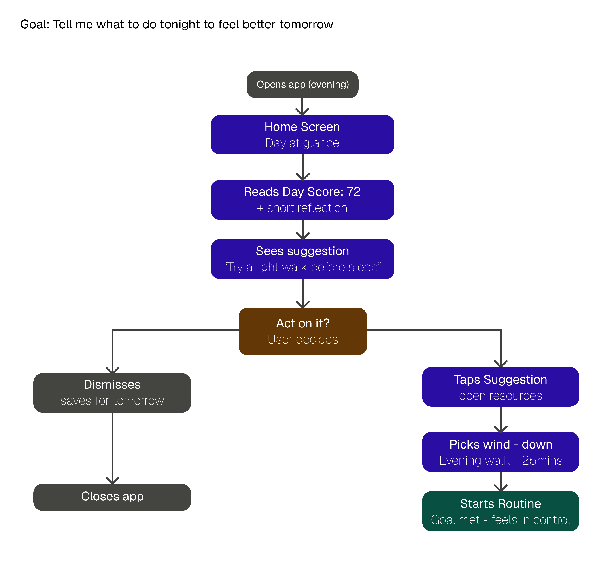
The manual-entry case, with a smart check for whether the wearable already caught it, so nothing gets logged twice.
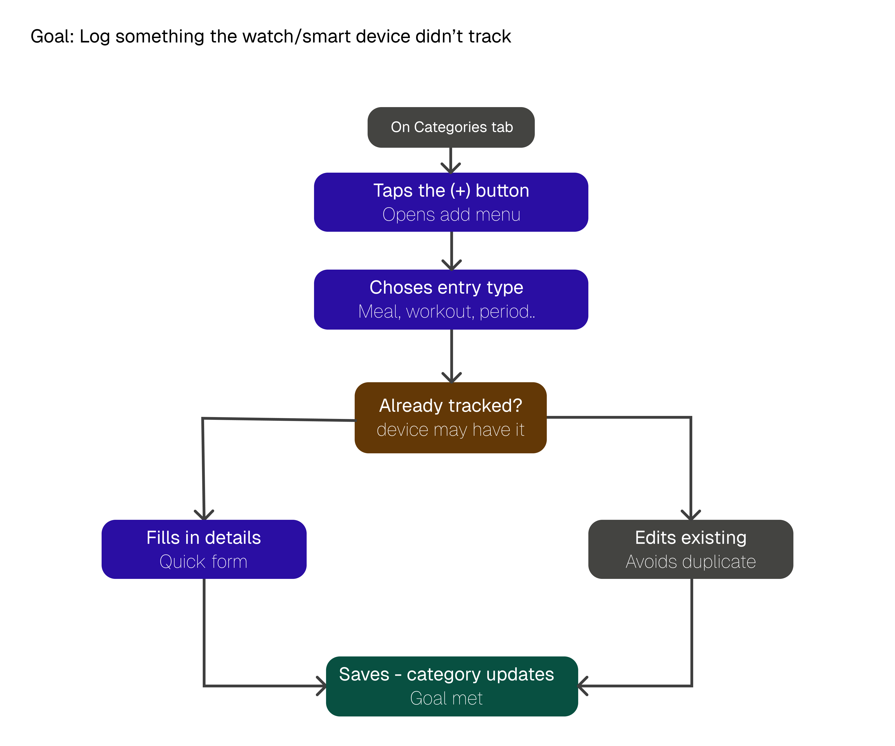
Onboarding: account, categories, optional device connect, straight to a first dashboard that already shows value.
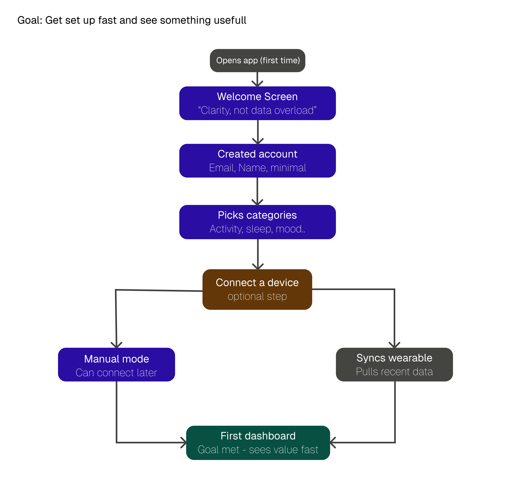
Mapping by goal kept the design honest. If a path to a goal got long or branched too much, that was a problem to fix in the structure, not decorate in the UI. The "already tracked?" check in Journey 02 and the optional device step in Journey 03 both came directly from spotting friction in these flows.
A site map fixed the architecture, then wireframes resolved the layout decisions in greyscale, before any visual design went on top. The hard calls were made in boxes, where a weak structure has nowhere to hide.
Everything hangs off a five-tab bottom nav: Home, Categories, Resources, Assistant, Settings. Categories holds all eleven trackable areas; the rest stay shallow so nothing is more than a tap or two from the home screen.
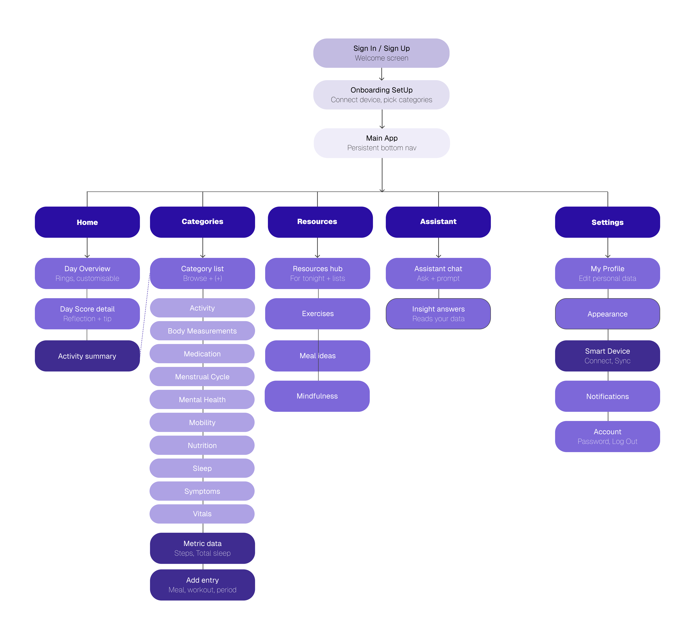
I worked the hardest layout decisions in grey first, where there is no colour or polish to lean on. Each screen went from a low-fidelity test to a mid-fidelity resolution.

Tested three rings versus five. Five won, made horizontally scrollable and customisable, turning a layout decision into a personalisation feature.
One clear number first. The big total leads, the stage graph waits below the fold, following a "not data overload" principle.
Lo-fi had choice paralysis from equal-weight lists. Mid-fi lifted one prioritised "For tonight" recommendation to the top.
An empty chat read as intimidating, so suggested prompt chips were added to show what the assistant can do at a glance.
The visual language combines minimal layouts, soft purple gradients, and plain-language summaries, so the app feels supportive rather than technical. Every screen stays quiet until you ask it for more.
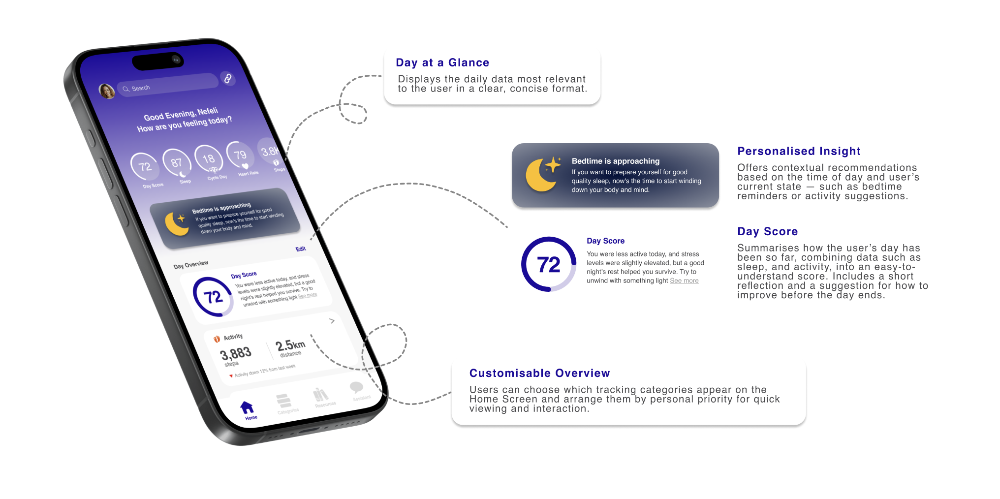
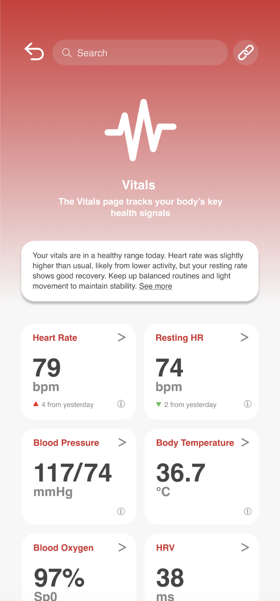
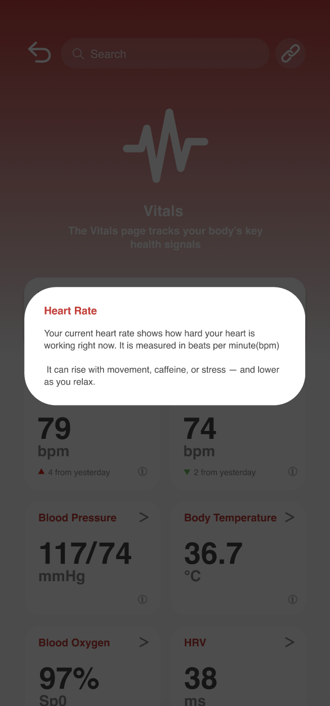
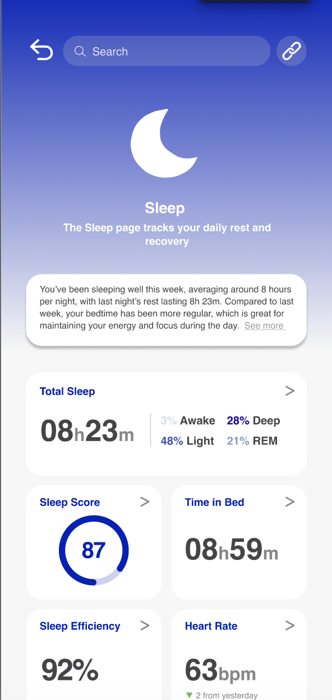
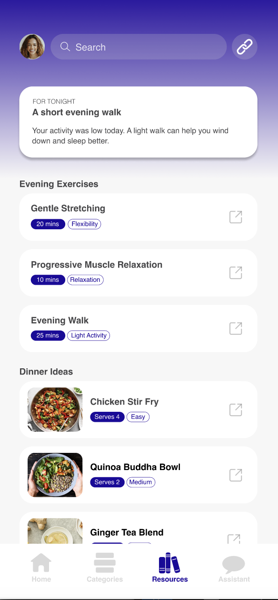
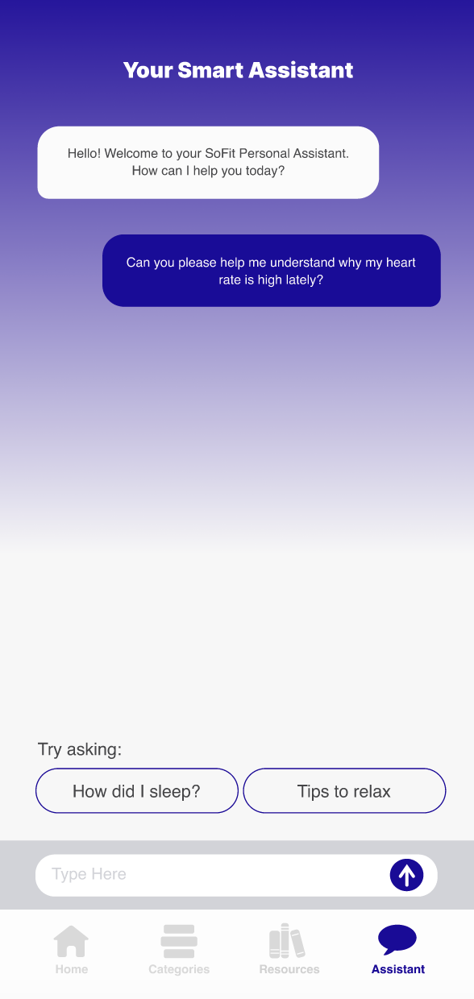
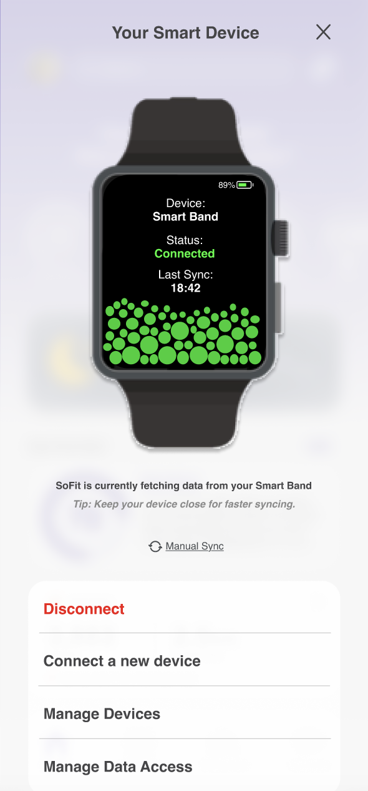
NUMA comes from "numen", the inner life force, the spark of vitality. The brand reflects clarity, calm, and quiet sophistication: a deep purple that reads as both relaxing and rich, set in clean Helvetica, for a product about wellbeing rather than performance.
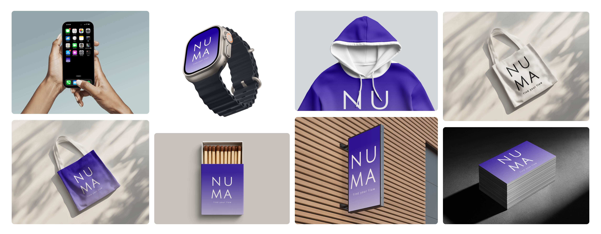
A clean, neutral sans-serif. Familiar and modern, it keeps the interface quiet so the data and suggestions lead.